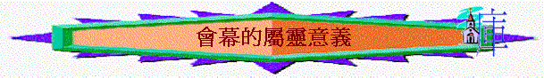

舊約的會幕內容與屬靈意義
a.藍圖----神的啟示與人的領受(出24:9-18)
「耶和華對摩西說：「你上山到我這裡來，住在這裡，我要將石版並我所寫的律法和誡命賜給你，使你可以教訓百姓。」」出24:12
「摩西進入雲中上山，在山上四十晝夜。」出24:18
b.材料----神的預備與人的獻上(出25:1-8)
「以色列人照著摩西的話行，向埃及人要金器、銀器，和衣裳。耶和華叫百姓在埃及人眼前蒙恩，以致埃及人給他們所要的。他們就把埃及人的財物奪去了。」出12:35-36
「耶和華曉諭摩西說：「你告訴以色列人當為我送禮物來；凡甘心樂意的，你們就可以收下歸我。所要收的禮物：就是金、銀、銅，藍色、紫色、朱紅色線，細麻，山羊毛，染紅的公羊皮，海狗皮，皂莢木，點燈的油並做膏油和香的香料，紅瑪瑙與別樣的寶石，可以鑲嵌在以弗得和胸牌上。」出25:1-7
c.內容----屬天樣式與現今表樣(出25:8-27:19)
「又當為我造聖所，使我可以住在他們中間。製造帳幕和其中的一切器具都要照我所指示你的樣式。」出25:8-9
「那頭一層帳幕作現今的一個表樣，所獻的禮物和祭物，就著良心說，都不能叫禮拜的人得以完全。」來9:9
「照著天上樣式作的物件必須用這些祭物去潔淨；但那天上的本物自然當用更美的祭物去潔淨。」來9:23
〜聖所是照屬天的樣式而建造而成(從神的意思而來)，也表達將來新約及在天上的模樣。(e.g.身體是聖靈的殿，將來的天堂)
(1)約櫃----遇見真神的地方(出25:10-22)
「我要在那裡與你相會，又要從法櫃施恩座上二基路伯中間，和你說我所要吩咐你傳給以色列人的一切事。」」出25:22
〜人遇見神後，會從約櫃中更深認識：
(A)神的榮耀
「要裡外包上精金，四圍鑲上金牙邊。」出25:11
(B)神的神聖
「要用皂莢木做兩根杠，用金包裹。要把杠穿在櫃旁的環內，以便抬櫃。」出25:13-14
〜目的是讓人不會真接接觸約櫃，所以杠長期在櫃旁，作搬運而不可接觸神聖約櫃之用。
(C)神的恩典
「要用精金做施恩座（施恩：或作蔽罪；下同），長二肘半，寬一肘半。」出25:17
「櫃上面有榮耀基路伯的影罩著施恩座（施恩：原文作蔽罪）。這幾件我現在不能一一細說。」來9:5
「所以，我們只管坦然無懼的來到施恩的寶座前，為要得憐恤，蒙恩惠，作隨時的幫助。」來
4:16
～施恩座有施恩、蔽罪的意思
(D)神的能力
「耶和華啊，求你興起，和你有能力的約櫃同入安息之所！」詩132:8
(E)神的信實
「要將施恩座安在櫃的上邊，又將我所要賜給你的法版放在櫃裡。」出25:21
～櫃內有約，代表神一直記著與人立的西乃之約，因祂是信實的。
(F)神的說話
「我要在那裡與你相會，又要從法櫃施恩座上二基路伯中間，和你說我所要吩咐你傳給以色列人的一切事。」出25:22
(2)桌子----生活滿足的記念(出25:23-30)
(A)擺放馨香至聖的供物
「要做桌子上的盤子、調羹，並奠酒的爵和瓶；這都要用精金製作。又要在桌子上，在我面前，常擺陳設餅。」出25:29-30
〜主要是擺放酒與餅，在舊約中以酒為奠祭加上以餅為素祭是至聖、馨香、因不用流血，不用宰殺，從田地裏的出產作供物，所以是至聖的。
(B)使人得著滿足的記念
「你要取細麵，烤成十二個餅，每餅用麵伊法十分之二。要把餅擺列兩行（或作：摞；下同），每行六個，在耶和華面前精金的桌子上；又要把淨乳香放在每行餅上，作為紀念，就是作為火祭獻給耶和華。每安息日要常擺在耶和華面前；這為以色列人作永遠的約。這餅是要給亞倫和他子孫的；他們要在聖處吃，為永遠的定例，因為在獻給耶和華的火祭中是至聖的。」利24:5-9
「我實實在在的告訴你們，信的人有永生。我就是生命的糧。」約6:47-48
所以，他們在神寶座前，晝夜在他殿中事奉他。坐寶座的要用帳幕覆庇他們。他們不再飢，不再渴；日頭和炎熱也必不傷害他們。」啟7:15-16
〜放陳設餅代表神給人在田地裏有供應，人以火祭作為向神回應的記念，而祭司(事奉的人)也可以享用，也表示神對選民的應許(迦南地有豐盛)是實在的，而在新約，主就是生命的糧，也帶給人滿足與永生。將來在天家，人也不饑不餓。
(3)燈臺----照亮聖所的媒介(出25:31-40)
「論到你所看見、在我右手中的七星和七個金燈臺的奧秘，那七星就是七個教會的使者，七燈臺就是七個教會。」」啟1:20
〜燈臺預表今日的教會
(A)燈臺的目的----照亮聖所----神得榮耀
「要做燈臺的七個燈盞。祭司要點這燈，使燈光對照。」出25:37
「神能照著運行在我們心裡的大力充充足足的成就一切，超過我們所求所想的。但願他在教會中，並在基督耶穌裡，得著榮耀，直到世世代代，永永遠遠。阿們！」弗3:20-21
(B)燈臺的藍圖----照神樣式----謹守真理
「做燈臺和這一切的器具要用精金一他連得。要謹慎做這些物件，都要照著在山上指示你的樣式。」出25:39-40
(C)燈臺的材料----一他連得----強調合一
「要用精金做一個燈臺。燈臺的座和幹與杯、球、花，都要接連一塊錘出來。」出25:31
「球和枝子要接連一塊，都是一塊精金錘出來的。」出25:36
「做燈臺和這一切的器具要用精金一他連得。」出25:39
(D)將來的盼望---沒有日光---基督為光
「那城內又不用日月光照；因有神的榮耀光照，又有羔羊為城的燈。」啟
21:23
(4)帳幕----天上聖所的影像(26)
「在聖所，就是真帳幕裡，作執事；這帳幕是主所支的，不是人所支的。」來8:2
「因為基督並不是進了人手所造的聖所（這不過是真聖所的影像），乃是進了天堂，如今為我們顯在神面前。」來9:24
〜原來昔日的帳幕是預表天堂/天上的模樣
(A)代表神的同住
「我聽見有大聲音從寶座出來說：「看哪，神的帳幕在人間。他要與人同住，他們要作他的子民。神要親自與他們同在，作他們的神。」啟21:3
(B)代表榮耀美麗
「你要用十幅幔子做帳幕。這些幔子要用撚的細麻和藍色、紫色、朱紅色線製造，並用巧匠的手工繡上基路伯。」出26:1
(C)代表得神蔭庇
「又要用染紅的公羊皮做罩棚的蓋；再用海狗皮做一層罩棚上的頂蓋。你要用皂莢木做帳幕的豎板。」出26:14-15
「所以，他們在神寶座前，晝夜在他殿中事奉他。坐寶座的要用帳幕覆庇他們。他們不再飢，不再渴；日頭和炎熱也必不傷害他們。」啟7:15-16
(D)代表隔絕終除
「要使幔子垂在鉤子下，把法櫃抬進幔子內；這幔子要將聖所和至聖所隔開。」出26:33
「弟兄們，我們既因耶穌的血得以坦然進入至聖所，是藉著他給我們開了一條又新又活的路，從幔子經過，這幔子就是他的身體。」來10:19-20
(5)祭壇----向神回應的途徑(出27:1-8)
「你要用皂莢木做壇。這壇要四方的，長五肘，寬五肘，高三肘。」出27:1
(A)來到神前
「我就走到神的祭壇，到我最喜樂的神那裡。神啊，我的神，我要彈琴稱讚你！」詩43:4
〜不是每一個人都可以入到聖所，但選民卻可以走至聖所外的壇，對神作出回應與呼求(藉祭司)。
(B)向神獻上
「所以，你在祭壇上獻禮物的時候，若想起弟兄向你懷怨。」太5:23
「他用皂莢木做燔祭壇，是四方的，長五肘，寬五肘，高三肘。」出38:1
〜壇又名「燔祭壇」，目的是作獻祭
(C)求神赦免
「要在壇的四拐角上做四個角，與壇接連一塊，用銅把壇包裹。」出27:2
「人若不是埋伏著殺人，乃是神交在他手中，我就設下一個地方，他可以往那裡逃跑。人若任意用詭計殺了他的鄰舍，就是逃到我的壇那裡，也當捉去把他治死。」出21:13-14
「亞多尼雅懼怕所羅門，就起來，去抓住祭壇的角。」王上1:50
(D)代表流血
「又要把些血抹在會幕內、耶和華面前香壇的四角上，再把公牛所有的血倒在會幕門口、燔祭壇的腳那裡。」利4:7
「揭開第五印的時候，我看見在祭壇底下，有為神的道、並為作見證被殺之人的靈魂，大聲喊著說：「聖潔真實的主啊，你不審判住在地上的人，給我們伸流血的冤，要等到幾時呢？」」啟6:9-10
(6)院子----分別出來的區域(27:9-19)
「你要做帳幕的院子。院子的南面要用撚的細麻做帷子，長一百肘。」出27:9
(A)院子內是至聖之地
「所剩下的，亞倫和他子孫要吃，必在聖處不帶酵而吃，要在會幕的院子裡吃。」利
6:16
「為贖罪獻這祭的祭司要吃，要在聖處，就是在會幕的院子裡吃。」利
6:26
～聖處──就是在會幕的院子
(B)外人不能進入之地
「在帳幕前東邊，向日出之地安營的是摩西、亞倫，和亞倫的兒子。他們看守聖所，替以色列人守耶和華所吩咐的。近前來的外人必被治死。」民3:38
「主耶和華如此說：「以色列中的外邦人，就是身心未受割禮的，都不可入我的聖地。」」結44:9